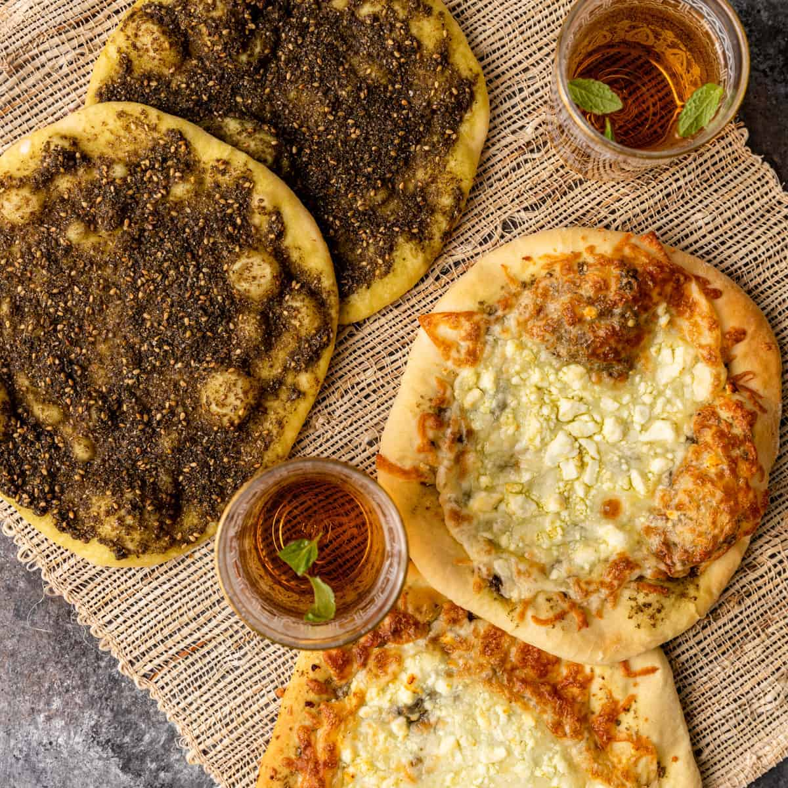

Syria
|
Syria, nestled in the heart of the Middle East, is a country that has long enchanted travelers with its profound historical depth, stunning landscapes, and enduring cultural heritage. As one of the world's oldest inhabited regions, Syria is often described as a cradle of civilization, where ancient empires and diverse cultures have left indelible marks on its cities, architecture, and way of life. Its position along vital trade routes brought waves of influence from the Persians, Romans, Byzantines, Arabs, and Ottomans, each of which contributed layers to Syria's distinct cultural mosaic. Even today, this heritage is visible in the intricate mosaics of its mosques, the grandiose ruins of its ancient cities, and the traditional crafts that continue to thrive. Contents of this Page: |
Food
Syrian cuisine is a rich and flavorful tapestry woven from centuries of cultural influences, blending Mediterranean, Arab, and Levantine traditions with a unique twist. Known for its fresh ingredients, vibrant flavors, and aromatic spices, Syrian food is celebrated for its balance of flavors, from zesty and tangy to savory and sweet. Meals are often social events, with families and friends gathering around large platters to share a variety of dishes, reflecting Syria's warm hospitality and deep-rooted culinary traditions.
KibbehMade from a blend of ground meat, bulgur wheat, and spices, kibbeh is a beloved Syrian dish shaped into patties or balls and fried to a golden crisp or cooked in a yogurt sauce. The outer crust is crunchy, while the inside is tender and flavorful with warm spices. This hearty, satisfying dish is a must-try for experiencing Syria’s favorite comfort food. |
|
MujadaraThis comforting mix of lentils, rice, and caramelized onions is simple yet rich, with a nutty flavor and sweetness from the onions. Often served with yogurt or salad, mujadara is a filling vegetarian dish that offers a taste of Syria’s traditional, wholesome cooking. |

|
ManakishA popular breakfast, manakish is a flatbread topped with za’atar, cheese, or meat and baked until warm and fragrant. The bread is soft with a slightly crispy edge, and the toppings add a burst of flavor, making it a delicious start to the day. |
 |
MakdousPickled baby eggplants stuffed with walnuts, garlic, and spices, preserved in olive oil, makdous is a unique, tangy appetizer often enjoyed with bread. Its bold flavors are a perfect introduction to Syria’s love for preserved foods with a rich taste. |
|
MuhammaraA spicy dip made from red peppers, walnuts, and pomegranate molasses, muhammara is tangy, nutty, and slightly sweet. It’s perfect with bread or as part of mezze, and its complex flavor profile highlights Syria’s rich culinary creativity. | |
TabboulehThis refreshing salad of parsley, tomatoes, onions, bulgur, and mint is dressed with lemon juice and olive oil. Light and zesty, tabbouleh balances out heavier dishes, offering a crisp, fresh taste of Syria’s use of herbs and simple ingredients. |
Desserts
Syrian desserts are a deliciously sweet part of the country’s culinary heritage, known for their rich flavors, aromatic spices, and beautiful presentation. Syrian sweets often combine ingredients like rosewater, orange blossom water, honey, nuts, and delicate pastry to create treats that are as visually appealing as they are flavorful. Desserts in Syria are typically enjoyed during family gatherings, festivals, and celebrations, often served alongside tea or coffee as a symbol of hospitality. Many Syrian desserts are shared across the Levant, but the country’s unique techniques and flavor combinations make its versions distinct.
Halawet el JibnMade from thin rolls of cheese dough filled with cream and topped with rose syrup and pistachios, Halawet el Jibn has a soft, chewy texture with a mild, milky sweetness. It’s a refreshing dessert with a delicate flavor, ideal for enjoying on warm days. |
|
BaklavaLayers of thin, flaky filo pastry filled with crushed pistachios, almonds, or walnuts, and drizzled with a rosewater-infused syrup, baklava is buttery, crunchy, and satisfyingly sweet. Each bite offers a perfect balance of nutty and floral flavors, making it an iconic dessert throughout Syria and beyond. | |
KnafehThis warm dessert combines shredded phyllo dough or semolina with cheese, soaked in a rosewater syrup, and topped with crushed pistachios. Knafeh is both sweet and slightly salty, with a gooey, rich texture, making it an irresistible treat that’s perfect for cheese lovers. | |
BarazekThese thin, crispy cookies are coated with sesame seeds and dotted with pistachios, offering a nutty, slightly sweet flavor with every bite. Barazek are a popular snack to enjoy with tea or coffee, highlighting Syria’s love for simple yet flavorful treats. |
Cities
Aleppo
|
Aleppo, one of the oldest continuously inhabited cities in the world, is a city that reflects Syria’s rich historical, cultural, and architectural heritage. Located in northern Syria, Aleppo has long been a center of trade, connecting the Silk Road to the Mediterranean and beyond. This history of trade and cultural exchange has left Aleppo with a unique character, blending influences from Arab, Roman, Byzantine, Ottoman, and even Persian civilizations. Its significance as a historical hub earned the Old City of Aleppo a place on the UNESCO World Heritage list in 1986. The heart of Aleppo lies in its stunning medieval architecture and bustling souks, or marketplaces. The Citadel of Aleppo, a massive fortress that dominates the skyline, is one of the most remarkable historical structures in the Middle East. Built on a hill, the Citadel has witnessed centuries of history, serving as a stronghold for various empires and a symbol of the city’s resilience. Surrounding the Citadel are the famous souks of Aleppo, which are some of the oldest and longest covered markets in the world. Walking through these souks is like stepping back in time, with stalls overflowing with spices, textiles, perfumes, soaps, and traditional sweets. The air is filled with the aroma of spices like cumin, sumac, and Aleppo pepper, which are integral to the city’s renowned cuisine. Aleppo is also celebrated for its culinary heritage, often considered the gastronomic capital of Syria. Its cuisine is distinct, with rich, flavorful dishes that reflect centuries of culinary refinement. Kibbeh nayyeh, a dish of finely minced raw lamb mixed with bulgur and spices, is a local specialty, along with ma’amoul (date-filled cookies) and the famous Aleppo pepper, known for its mild heat and fruity flavor. Aleppan cuisine has a reputation for bold flavors and complex spice blends, making it a favorite among food lovers. |
Damascus
|
Damascus, often regarded as one of the oldest continuously inhabited cities in the world, is the vibrant capital of Syria and a city steeped in history, spirituality, and culture. Known as the "City of Jasmine" for its fragrant blossoms, Damascus has been a significant cultural and religious center for centuries, influencing the Middle East and beyond. The Old City, a UNESCO World Heritage site, is a treasure trove of historic architecture and winding alleyways that transport visitors back in time. At its heart lies the Umayyad Mosque, one of the oldest and grandest mosques in the Islamic world, known for its stunning mosaics and spiritual significance to Muslims worldwide. Nearby, the ancient Souq al-Hamidiyah bustles with activity, offering traditional textiles, spices, crafts, and sweets, capturing the essence of Damascus's lively commercial spirit. Damascus is also a city of diverse neighborhoods, each with its own unique character, from the Christian Quarter with its historic churches to the tranquil courtyards of Azem Palace, a beautiful example of Ottoman architecture. The city’s cuisine, deeply rooted in Levantine traditions, is beloved for dishes like fatteh, mujadara, and kibbeh, often served in bustling restaurants and cafes where locals gather over coffee and conversation. Despite recent challenges, Damascus’s resilient spirit endures, with its people dedicated to preserving the city’s ancient heritage and traditions. For travelers, Damascus offers an immersive experience that is both timeless and alive with energy, blending the sacred with the everyday in a city that has witnessed millennia of history unfold within its walls. |
Tartus
|
Tartus, a charming coastal city on Syria’s Mediterranean shoreline, is known for its laid-back atmosphere, scenic beauty, and historical significance. As one of Syria’s main port cities, Tartus boasts sandy beaches and a mild Mediterranean climate, making it a popular retreat for locals and visitors alike. The city’s history dates back to the Phoenician era, and it later served as an important Crusader stronghold; remnants of its ancient past can be seen in the Old City, where cobblestone streets wind through remnants of Crusader-era fortifications. One of the key historical sites is the Tartus Cathedral, originally built by the Crusaders and now serving as a museum, showcasing artifacts from Syria’s rich past. Nearby, the ancient city of Amrit, with its unique Phoenician ruins and well-preserved temple, offers visitors a glimpse into the region’s deep-rooted history. Tartus combines the allure of a relaxed seaside town with layers of history, making it a unique destination for those exploring Syria’s diverse cultural landscape. |
Latakia
|
Latakia, Syria’s largest port city on the Mediterranean coast, is known for its vibrant atmosphere, beautiful beaches, and blend of modernity with ancient history. This bustling city has long been an important cultural and trade hub, attracting visitors with its lively waterfront, bustling markets, and seaside resorts. Latakia’s history stretches back to ancient times, with nearby archaeological sites such as Ugarit, one of the world’s earliest known cities, where the first alphabet is believed to have originated. The Corniche, a scenic coastal promenade, is a favorite spot for both locals and visitors to enjoy stunning sea views, fresh seafood, and traditional Syrian cafes. Latakia’s Mediterranean climate, combined with its cultural heritage and relaxed coastal vibe, makes it a unique destination within Syria, offering a refreshing mix of history, culture, and leisure by the sea. |
Mountains
Syria's mountainous regions are a key feature of its geography, contributing to the country's natural beauty, climate diversity, and historical significance. These mountains form a series of ranges and hills that shape the landscape, climate patterns, and even the socio-economic activities of the regions they encompass. Running mostly along Syria’s western and southern borders, these ranges provide a striking contrast to the country’s expansive desert areas and fertile plains.
Nusayriyah
|
The Al-Nusayriyah Mountains, also known as the Coastal Mountain Range, run parallel to Syria's Mediterranean coast, stretching about 100 kilometers from the Turkish border in the north to the Ghab Valley in the south. Known for their lush vegetation and relatively high rainfall, these mountains create a temperate, Mediterranean climate ideal for agriculture, supporting olive groves, citrus orchards, and vineyards. The highest peak, Nabi Yunis, rises to about 1,562 meters, offering panoramic views of the surrounding landscape. This range acts as a climatic barrier, shielding the interior regions of Syria from the moist coastal air and resulting in a rain shadow that influences the drier conditions inland. Rich in biodiversity and cultural heritage, the Al-Nusayriyah Mountains are home to various communities and ancient sites, contributing to Syria’s scenic beauty and agricultural productivity. |
Anti-Lebanon Mountains (Mount Hermon)
|
The Anti-Lebanon Mountains form a rugged, arid range along the border between Syria and Lebanon, stretching about 150 kilometers and crowned by Mount Hermon, which stands at 2,814 meters as the range's highest peak. Lying in the rain shadow of the western Lebanon Mountains, this range is drier and more sparsely vegetated, yet it remains vital for regional water resources, with rivers like the Barada providing essential water to Damascus and surrounding areas. Historically, the Anti-Lebanon Mountains have been a refuge and stronghold, home to diverse communities and rich in cultural significance, with ancient ruins and a legacy of myth and religious importance. Today, these mountains continue to play a crucial role, shaping the environment, supporting human settlements, and standing as a testament to Syria's natural and cultural heritage. |
Valleys
Syria's mountainous regions are a key feature of its geography, contributing to the country's natural beauty, climate diversity, and historical significance. These mountains form a series of ranges and hills that shape the landscape, climate patterns, and even the socio-economic activities of the regions they encompass. Running mostly along Syria’s western and southern borders, these ranges provide a striking contrast to the country’s expansive desert areas and fertile plains.
Barada
The Barada Valley is a fertile and historically significant valley in southwestern Syria, carved by the Barada River as it flows from the Anti-Lebanon Mountains toward Damascus. This valley has been vital to the region for thousands of years, as the Barada River is the main water source for Damascus, one of the world’s oldest continuously inhabited cities. The valley’s rich soil and reliable water supply have supported agriculture, providing crops and greenery that stand in stark contrast to the surrounding arid landscapes.
The Barada River, whose flow is strongest in winter and spring due to snowmelt from the mountains, has historically sustained orchards, vineyards, and gardens that line the valley, often described as an oasis in the semi-arid surroundings. In antiquity, the valley's abundance earned Damascus the title of “Paradise on Earth” among early travelers and geographers, reflecting its lush scenery. Villages and historical sites, including Roman and Byzantine ruins, are scattered throughout the valley, highlighting its longstanding cultural and economic importance. Despite modern challenges, such as reduced river flow due to drought and urban expansion, the Barada Valley remains a crucial part of Syria’s natural heritage and an essential lifeline for Damascus and nearby communities.
Khabur
The Khabur Valley is a significant and fertile region in northeastern Syria, centered around the Khabur River, a major tributary of the Euphrates. This valley has historically been one of Syria's agricultural heartlands, supporting the cultivation of wheat, barley, cotton, and other crops due to its rich alluvial soil and access to water from the river. The Khabur River, which originates in Turkey and flows southward through Syria, has enabled extensive irrigation networks that make farming possible even in the semi-arid environment of the region.
The Khabur Valley is not only agriculturally important but also rich in historical and archaeological sites, as it was part of ancient Mesopotamia, one of the world’s earliest centers of civilization. The valley contains numerous archaeological remains, including ancient cities, temples, and fortifications from civilizations like the Assyrians, Hurrians, and Akkadians. It served as a crossroads for trade and culture, linking the Assyrian Empire to surrounding regions, and has been continuously inhabited for thousands of years.